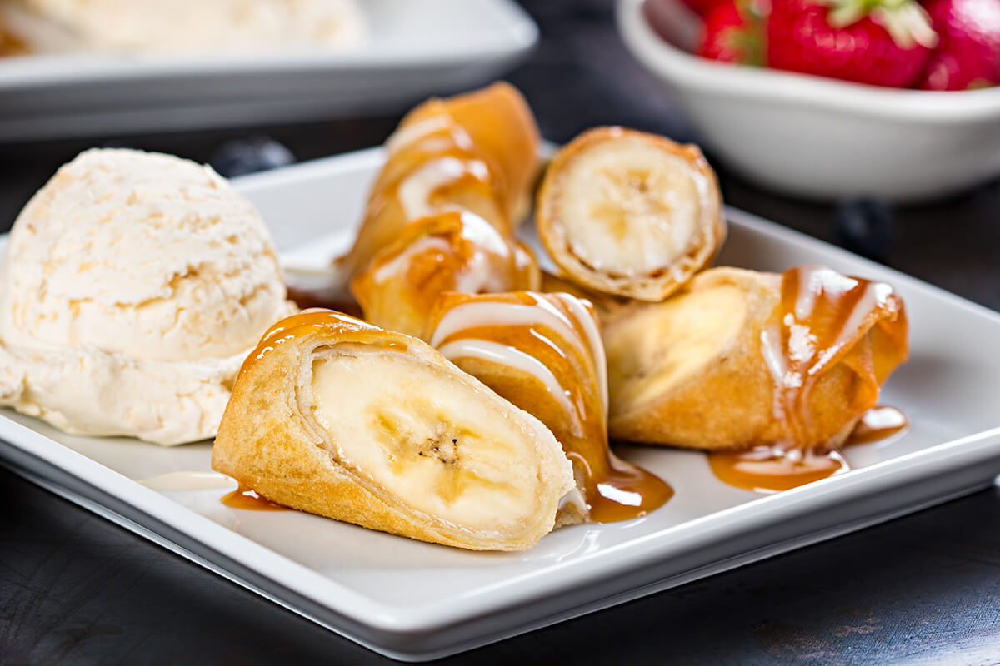

Spring Rolls

This is an amazing and simple dessert that takes no time to make!
Ingredients:
- 8 spring roll wrappers
- 4 med bananas cut in half
- 1/4 cup sugar
- 1/2 teaspoon apple pie spice
- vegetable oil
- caramel sauce and vanilla ice cream
- Heat the oil. Pour about an inch of oil into a large frying pan. Heat to 350 F.
- Blend sugar mixture. In a small bowl blend the sugar and apple pie spice together.
- Wet the spring rolls. Place (individually) each spring roll in water for 10 seconds.
- Sprinkle with sugar. Sprinkle the spring roll wrapper with a teaspoon of the sugar mixture. Place tha banana onto the wrapper. Carefully fold in the sides, then roll-up.
- Fry the spring rolls. USing tongs, place the spring rolls into the hot oil. Cook for about 5 mintues, turning after 2 and a half mintues.
- Serve. Serve hot with a side of vanilla ice cream and caramel drizzled on top.
Return to home